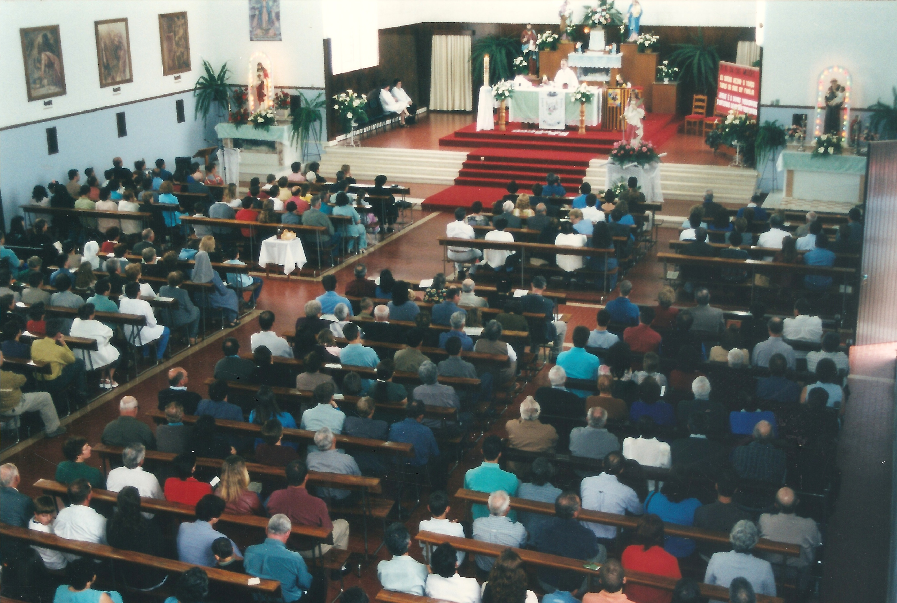
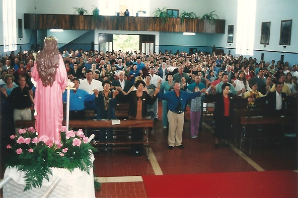
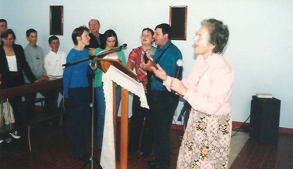
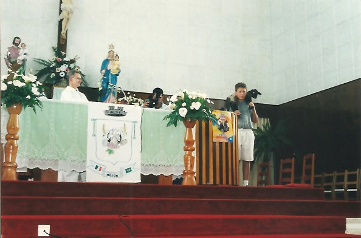
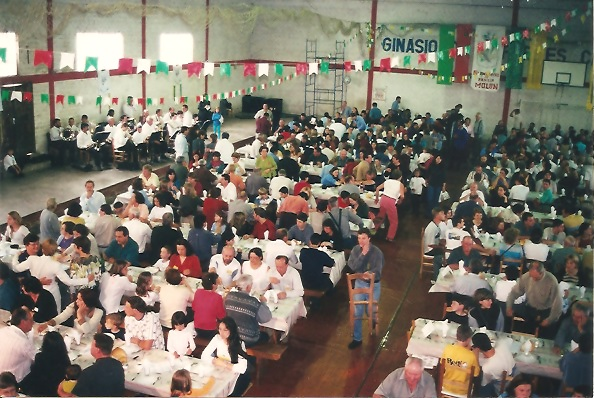
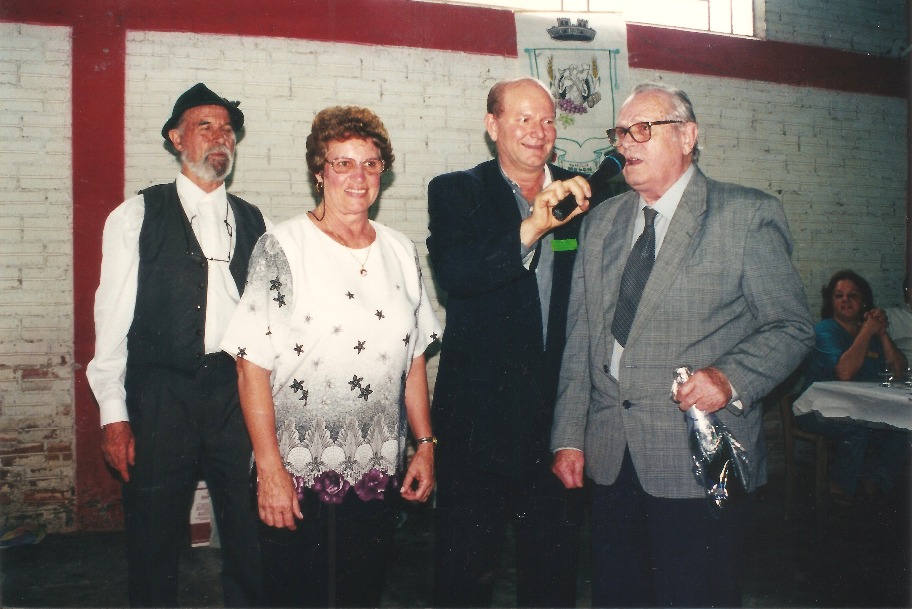
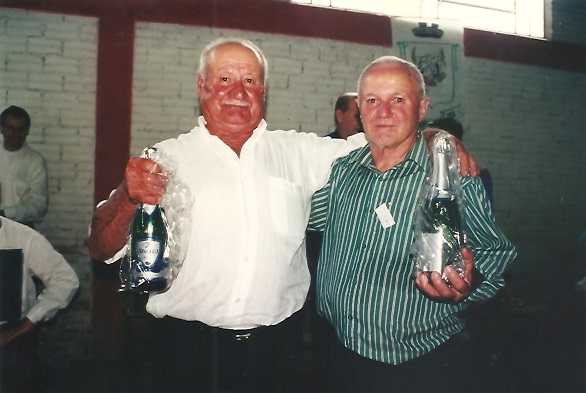

5º Encontro - 2001
20 e 21 de outubro - Otávio Rocha - Flores da Cunha/RS
O 5º Encontro da Família Molon foi realizados nos dias 20 e 21 de outubro do ano de 2001, em Otávio Rocha, Município de Flores da Cunha. A programação seguiu os mesmos passos das edições anteriores, com recepção aos visitantes, filot, com a apresentação do Coral Típico de Otávio Rocha e o Grupo de Danças Il Passetto da Prefeitura Municipal de Flores da Cunha. No Domingo, um grande público se fez presente, motivado pelas pesquisas e conscientização que foi atingida para a elaboração do Livro da Família. Às 10 hora foi celebrada a missa pelo Frei Moacir Molon, e um dos momentos mais marcantes foi o recolhimento, por crianças, de rosas com os nomes de todas as pessoas falecidas da família desde o último encontro. Ao final da missa, devido a instabilidade do tempo, foram levadas até o altar as bandeiras do Brasil e da Itália. O almoço de confraternização foi prestigiado por aproximadamente 1.000 pessoas, grande se fez presente a Banda Florentina e parte do Coral Nova Trento de Flores da Cunha. Marcaram presença descendentes fixados em mais de 50 municípios gaúchos, e nos Estados de Santa Catarina, Paraná, São Paulo, Mato Grosso e Mato Grosso do Sul e até mesmo do exterior, dos Estados Unidos. No final do almoço foram prestadas homenagens aos descendentes mais idosos, sendo apontados Cecília Molon Cambruzzi, com 86 anos e Algelina Molon Lizzot e Rômolo Molon e Alcides Molon com 77 anos de vida. O último remanescente do grupo de imigrantes da Itália, o médico Dr. Giovanni Molon, 76, um dos idealizadores do primeiro encontro da família. foram homenageadas ainda a Irmã Romualda Molon, fixada em Nova Iorque, e Odete Terezinha Molon, moradora em Rondonópolis, Mato Grosso, por ter vindo do ponto mais distante do Brasil.
Neste encontro foi lançado o Livro "Molon, história de uma Família", elaborado por Floriano Molon. Este mesmo volume tivera uma pré-estréia no Recanto dedicado ao ator Parenti, na Biblioteca do Centro de Cultura de Caxias do Sul, em 17/10/2001. O livro registra a história da família, documentado a origem do nome e a citação dos nomes dos descendentes dos principais imigrantes identificados na região e mesmo País.
O Jornal Florense de Flores da Cunha editou na semana seguinte ao Encontro um interessante documentário contando os principais fatos da festa.
Material para produção de vídeo
Uma equipe dos alunos do Curso de Produção Videográfica da Universidade de Caxias do Sul, coletaram imagens para a elaboração de um videodocumentário. O vídeo foi oferecido pronto, com o título de "Famiglia" e captou momentos marcantes do Encontro e da história dos nossos antepassados.
|  |  |  |  |
|  |  |  |
{kind=link}
{kind=link}
{kind=link}
{kind=link}
{kind=link}
{kind=link}
{kind=link}